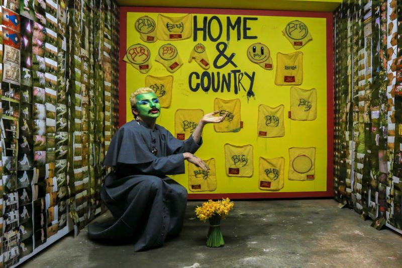
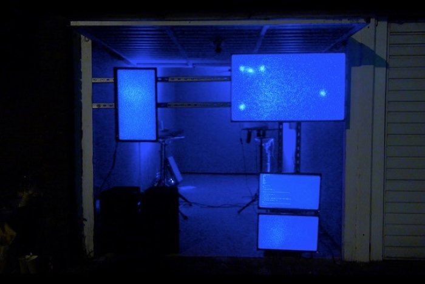
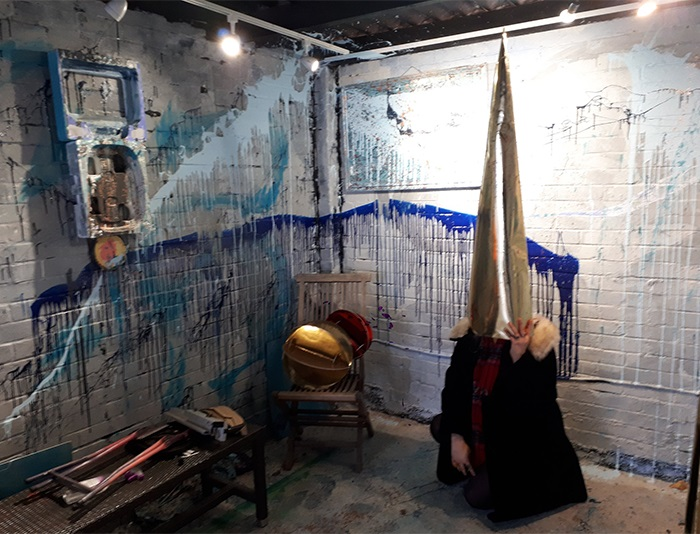
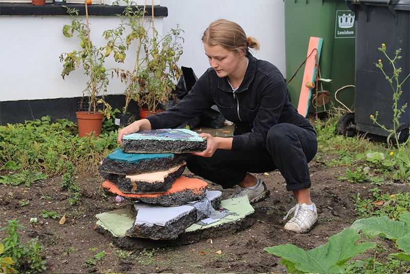
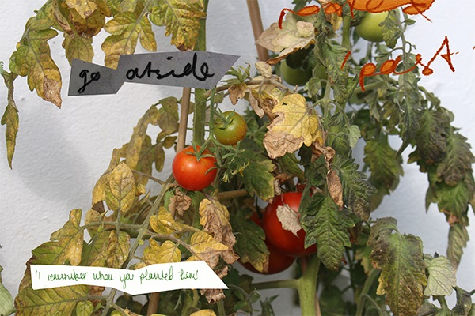
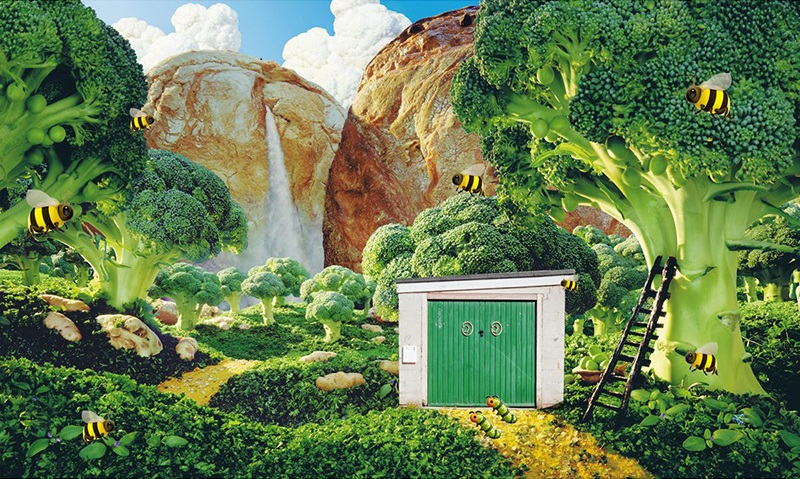
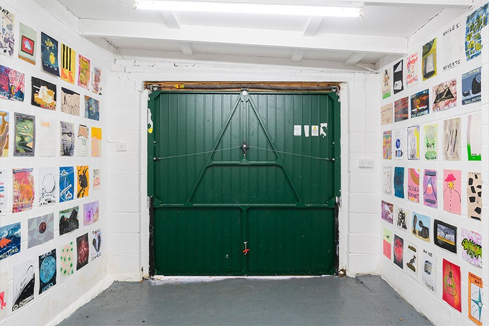

After a challenging year, we’re aiming to bring together artist-led spaces in a discussion about how we can
collaboratively encourage emerging artists and support artist-led spaces that are moving away from
traditional forms of
exhibiting as well as how we, as galleries, have had to reposition ourselves during a pandemic. All
participants are from non- profit organisations and
artist-led spaces, all working in the field of contemporary art as collaborative and community-integrated.
LDVA Gallery aims to benefit the local community and promote dialogue between the creative
and the public.
We have transitioned from LUPA (Lock Up Performance Arts) to LUVA (Lock Up
Visual Arts) in 2018 and are currently
LDVA (Lock Down Visual Arts) until we can open our garage door again.
We are an intergenerational artist-run organisation centring around a lock-up garage in Tower Hamlets. We
work with
the First Love Foundation food bank and community centre, aiming to reach out to the local community as well
as the art community.

Lock In Gallery Brighton
Lock In provides a platform for artists working in durational performance to open up a critical debate with
their live and non-live audiences. It has recently found a permanent space and now also hosts socially
engaged visual art exhibitions.
Lock In Brighton website

Lucie MacGregor - Garden Wall
Garden Wall is a DIY approach to curate and collectively question outdoor encounters with art.
Considering this space as a vehicle to provoke thought and artistic spectacle whilst adhering to social
distancing, neighbours have become collaborators, strangers grown into friends, making processes shifted by
seasonal change. Artist and Founder Lucie MacGregor was commissioned by Deptford X Festival 2020 and
Volunteer South London to collaborate with a Lewisham resident, in which a gradual exchange occurred
establishing the creation of Garden Wall and it’s conversational beginnings.
The Garden Wall became a permeable boundary, to provide a safe platform to view collaborative artworks
during the months of lockdowns, to reach out to an unpredictable, local audience and generate discussion
around the pairing of art within plants.
The project holds a nomadic ethos at its core; it moves in both geography, paces and contributors, rooted in
the physical and yet branches out to digital research, to be tended for both in dormant winter and the
flourishing days of spring.
Garden Wall
Lucie MacGregor

Brockley Gardens
Brockley Gardens is a kind of gallery space located in a small lock-up garage in Brockley, South London. The
gallery is a DIY
affair run by Tom and Billy, two friends who met at art school.
Brockley Garden website

Convenience Gallery
Convenience Gallery is a grass-roots artist-led space formed in May 2019 at Birkenhead Market. They started through a series of open conversations
and an open call. Their ethos revolves around inclusivity and collaboration.
Brockley Garden website